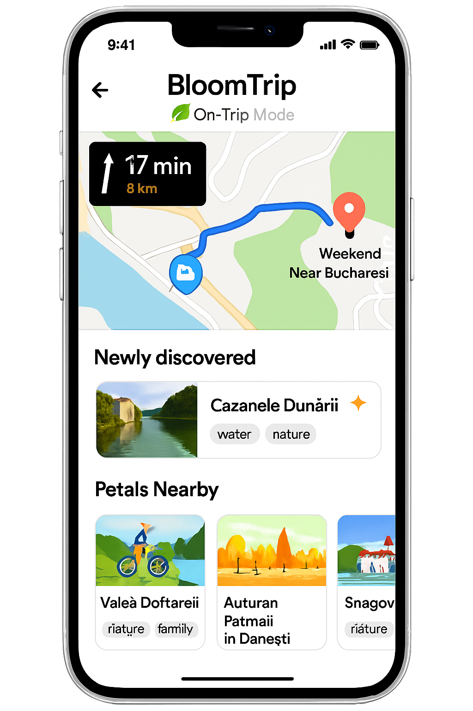

On-Trip Mode Transition (From Inspiration to Live Navigation)

Figure 11. On‑Trip Mode (mobile): live map + "Up Next" focus card, Nearby Petals rail, quick navigation/actions, and dynamic discovery banner.
1. Purpose
Provide a seamless shift from planning / inspiration (dashboard, saved petal, seasonal suggestion) into an in-motion experience that preserves itinerary context while surfacing opportunistic nearby petals.
2. Multi-Entry Paths into a Trip
| Entry Source |
User Action |
Initialization Behavior |
| Seasonal / Promo Card (e.g. Autumn Festival) |
Plan This Trip |
Seeds Trip Builder with promo petal as Day 1 anchor; derives default date (next weekend) |
| Saved Petal |
Add to Trip (no active trip) |
Creates draft trip: petal as first activity; prompts for date range |
| Recommended Petal (Suggestions rail) |
Start Trip |
Generates scaffold (cluster of complementary petals) using preference-weighted retrieval |
| Existing Draft Trip |
Continue / Navigate |
Enters Trip In Progress state with current day highlighted |
| Direct Deep Link (shared trip) |
Open Link |
Loads committed trip; offers "Start Navigation" if today within date range |
3. State Transition Overview
| State |
Source Trigger |
Key UI Differences |
Caching Notes |
| Builder (Draft) |
New plan initialization |
Editable sequence, drag & swap, AI refine chips |
Retrieval set + draft generation cache |
| Trip In Progress (Pre-Commit) |
User shifts focus to execution (e.g. presses Navigate) |
Day cards + live map + commit bar |
Adds live location polling (opt-in) |
| On‑Trip Mode (Active) |
Trip committed + user starts travel |
Up Next card pinned, minimized editing, quick actions bar |
Location & proximity caches (nearby petals) |
| Post-Trip Recap |
End date passed / user completes |
Summary metrics, feedback prompts |
Feedback submission flushes popularity deltas |
4. Core UI Regions (On-Trip Mode)
| Region |
Description |
Notes |
| A. Live Map |
Real-time position, route polyline (current leg) |
Minimizes to picture-in-picture on scroll |
| B. Up Next Card |
Photo, name, distance, ETA, key tags, Start / Navigate button |
Collapsible after arrival detection |
| C. Nearby Petals Rail |
Swipeable suggestions within detour threshold (e.g. +10% time) |
Excludes current day's locked anchors |
| D. Newly Discovered Banner |
Detected off-route or user-tapped unsaved Petal |
One-tap Save or Add to Trip (inserts into current day tail) |
| E. Quick Actions Bar |
Swap Activity, Navigate (Google/Apple/Waze), Save for Later, Refresh Suggestions |
Hides when keyboard up |
| F. Status & Progress Strip |
Completed count / remaining, daylight/time warnings |
Simple icon + tooltip pattern |
5. Live Data & Refresh Strategy
| Data |
Frequency |
Mechanism |
Notes |
| Location |
5–10s (dynamic) |
Geolocation API / native bridge |
Adaptive interval (slower when stationary) |
| Route ETA |
On significant movement or segment change |
Provider API (rate-limited) |
Fallback to precomputed segment durations |
| Nearby Petals |
Every 2 min or >300m deviation |
Geo-filtered hybrid search + tag weighting |
Cache window 2–5 min |
| Weather Alerts (optional) |
30 min |
Third-party weather API |
Show only impactful alerts |
6. Personalization & Suggestion Logic
Algorithm (simplified):
- Base retrieval: geo radius (dynamic by travel mode) + profile favorite_tags.
- Filter out already scheduled petals + recently dismissed.
- Diversify by tag cluster if top results homogenous >60%.
- Apply novelty boost for petals similar to discovered but unsaved.
- Rank by composite:
0.5 * relevance + 0.2 * proximity_score + 0.2 * novelty + 0.1 * popularity.
7. Telemetry Events
| Event |
Payload Example |
| ontrip_view |
{ tripId, userId, dayIndex, mode:"drive" } |
| ontrip_nearby_refresh |
{ tripId, count, radiusMeters } |
| ontrip_navigate_launch |
{ tripId, provider:"google", segmentId } |
| ontrip_discovered_show |
{ tripId, petalId } |
| ontrip_discovered_save |
{ tripId, petalId } |
| ontrip_swap_invoke |
{ tripId, fromPetal, toPetal } |
| ontrip_upnext_arrival |
{ tripId, petalId, driftSeconds } |
| ontrip_feedback_prompt |
{ tripId, timing:"end_of_day" } |
8. Edge Cases
| Scenario |
Handling |
| Offline mid-route |
Preserve last route polyline + Up Next details; disable refresh; queue saves |
| GPS drift / low accuracy |
Show accuracy ring; delay arrival detection until stable |
| No nearby petals |
Expand radius once; then show "Enjoy the journey" placeholder |
| Excess suggestions churn |
Debounce refresh; diff highlight only net-new cards |
| Arrival detection failure |
Manual "Mark Arrived" button reveals after ETA + threshold |
9. Accessibility
- Up Next card structured as landmark with heading for next destination.
- Nearby rail: list semantics + roving tabindex for swipeable cards.
- High-contrast map overlay icons; avoid color-only encoding for status.
- Motion-reduced mode: disable map auto-pan, provide textual distance updates.
10. Security & Privacy
| Concern |
Mitigation |
| Continuous location exposure |
Local-only; server gets coarse region unless user opts in to live share |
| Sensitive companion info in logs |
Exclude companion tags from telemetry payloads |
| Hallucinated dynamic suggestions |
Source annotations + retrieval ID hash stored for audit |
11. Future Enhancements
- Live collaborative markers (friends en route).
- Energy / battery-aware suggestion filtering (e-bike range).
- Predictive prefetch of likely next 2 segments for offline resilience.
- Passive learning of detour tolerance to tune proximity scoring.
Figure 11 added: 2025-09-05 (asset on-trip-mode-mobile.png).
Cross-links: trip-in-progress.md, navigation-picker.md, user-dashboard.md, petal_schema.md.